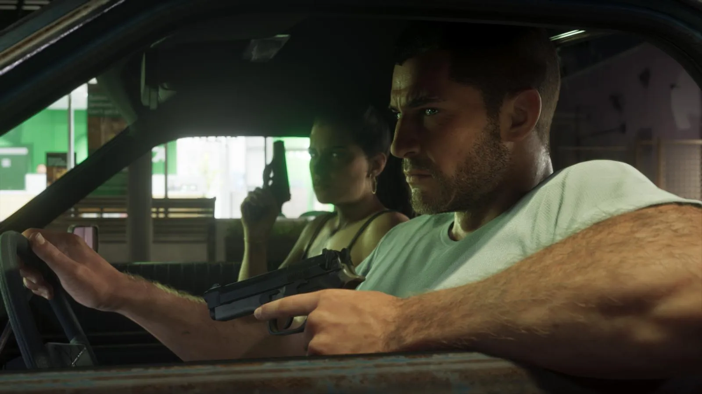
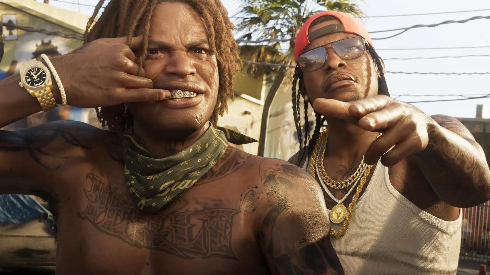

GTA 6 перед выходом: всё, что известно за неделю до релиза
Опубликовано:

- 9 ноября Take-Two подтвердила: разработка GTA 6 завершена, предзаказы «намного выше ожиданий».
- Обзоры, по данным инсайдеров, выйдут 18 ноября — за день до релиза.
- 5 ноября Rockstar выложила 39 новых скриншотов (Launch Gallery).
- Возрастной рейтинг: ESRB M 17+, PEGI 18.
- Онлайн на старте не будет; Bloomberg пишет об онлайн-режиме в 2027 году.
Главное за последние недели
До выхода Grand Theft Auto VI — считаные дни, и новостей стало столько, что в них легко запутаться. Мы собрали всё, что произошло с середины октября, и разделили на подтверждённое Rockstar и Take-Two и то, что пока только пишут журналисты и инсайдеры.
| Дата | Событие | Статус |
|---|---|---|
| 14 октября | Bloomberg публикует большой материал о создании GTA 6 | ✅ Интервью с руководством Rockstar |
| 15 октября | Launch Trailer — третий трейлер, 1:29 | ✅ Официально |
| 26 октября | Инсайдер NateTheHate: копии для обзоров разосланы, запрет снимается 18 ноября | ⚠️ Не подтверждено Rockstar |
| 29 октября | Журнал Edge №430 с обложкой GTA 6 (Журнал Edge №430: что Rockstar рассказала о GTA 6 за три недели до выхода) | ✅ Материал по встрече с Rockstar |
| 3 ноября | Правила предзагрузки и время запуска | ✅ Rockstar Support |
| 5 ноября | Launch Gallery — 39 новых скриншотов | ✅ Официально |
| 9 ноября | Take-Two: разработка завершена; анонс концерта GTA 6: The Festival | ✅ Официально |
| 10 ноября | Открыта предзагрузка | ✅ Официально |
Цифры: предзаказы, бюджет, команда
Предзаказы. На конференции 9 ноября Штраус Зелник сказал, что предзаказы GTA 6 идут «намного выше наших первоначальных ожиданий» и что «цифры скоро скажут сами за себя». При этом точных данных Take-Two не дала и предупредила, что «никогда не объявляет успех раньше, чем он случился». Независимые оценки есть: Sensor Tower (по Reuters) насчитала около 7,71 миллиона цифровых предзаказов на 3 ноября. Другие оценки выручки от предзаказов — 750 миллионов долларов и выше — это расчёты аналитиков, а не данные компании.
Бюджет. Официально Take-Two стоимость разработки не раскрывает. Bloomberg пишет, что, пока другие издатели стараются не выйти за 500 миллионов долларов, GTA 6 «могла стоить более чем вдвое больше». Аналитики ждут 40 миллионов проданных копий и больше 3 миллиардов долларов выручки за первые четыре месяца.
Команда. По данным, которые Rockstar дала Bloomberg, в студии работают 4711 человек в 12 офисах (в 2018 году, на выходе RDR 2, было 2441). Разработкой руководят трое «глав разработки» — Роб Нельсон, Аарон Гарбут (оба Rockstar North, Эдинбург) и Фил Хукер. Отдельный офис в Лос-Анджелесе почти целиком занимался прохожими, а уличные граффити в Вайс-Сити рисовали больше 50 реальных уличных художников.

Когда выйдут обзоры
26 октября инсайдер NateTheHate написал в X, что Rockstar начала рассылать прессе копии GTA 6 и что запрет на публикацию обзоров снимается 18 ноября. Insider Gaming заявил, что независимо подтвердил эту дату. Rockstar и Take-Two её официально не называли. История на стороне этой даты: обзоры GTA 5 вышли 16 сентября 2013 года, а Red Dead Redemption 2 — 25 октября 2018 года, оба раза ровно за день до релиза.
Если вы боитесь спойлеров — 18 ноября лучше не заходить в игровые новости: обзоры часто описывают первые часы игры и ключевые механики.
39 новых скриншотов
5 ноября Rockstar опубликовала на официальном сайте Launch Gallery — 39 новых скриншотов. По описаниям издателей (PC Gamer, Digit, Analytics Insight): Джейсон и Лусия с оружием; Джейсон в тактическом снаряжении у военного самолёта, а рядом — собака в боевой экипировке; ночные клубы с танцорами и диджеями; бары у причалов; полицейские рейды и погони; аллигатор, собаки, олени; подводное плавание с аквалангом; отель на Майами-Бич, очень похожий на Loews Miami Beach Hotel. Скриншоты мы добавим в справочник и сравнения, как только разберём их кадр за кадром.
Возрастной рейтинг
GTA 6 получила максимальные «взрослые» рейтинги: M (Mature 17+) от ESRB в США и Канаде, PEGI 18 в Европе, R18+ в Австралии и R18 в Новой Зеландии. ESRB указала семь причин: кровь и расчленение, интенсивное насилие, взрослый юмор, обнажённость, нецензурная лексика, откровенные сексуальные сцены, употребление наркотиков и алкоголя. Отдельно отмечены внутриигровые покупки. Подробно — Возрастной рейтинг GTA 6: 18+ — что в игре и почему.
Онлайн, ПК и диск
- Онлайн. Rockstar описывает GTA 6 как одиночную игру. Отдельный онлайн-режим не анонсирован. Bloomberg пишет, что он «ожидается в 2027 году», глава Twitch Дэн Клэнси в сентябре говорил о «следующем годе». Подробно — GTA 6 Online: будет ли мультиплеер.
- ПК. Не объявлен. GamesBeat писал о первом квартале 2027 года, Take-Two 9 ноября отправила все вопросы к Rockstar (GTA 6 на ПК: когда выйдет).
- Диск. Коробочное издание — это код. Будет ли версия на диске, по словам Зелника, решит Rockstar.
Что пока только слухи
Перед релизом в сети много «фактов», которые никто официально не подтверждал. Вот что стоит воспринимать осторожно: точное время снятия запрета на обзоры; длина титров (якобы больше 80 минут); дата выхода онлайна; ПК-версия в начале 2027 года; данные из служебных файлов PlayStation о мультиплеере. Мы помечаем такие вещи на сайте как «не подтверждено Rockstar» и обновим страницы, когда появятся официальные данные.
- GTA 5 за первые 24 часа заработала 800 миллионов долларов, а за три дня — миллиард. Ни один фильм или игра до неё так быстро до миллиарда не доходили.
- Флорида — прототип Леониды — получила имя от испанского Pascua Florida, «цветущая Пасха»: Хуан Понсе де Леон увидел её берег в пасхальные дни 1513 года.
- Bloomberg в шутку назвал GTA 6 «игрой, ради которой понадобилось больше всего „исследовательских“ поездок на Майами-Бич».
- Take-Two объявила, что продолжит поддерживать GTA Online для GTA 5 и после выхода GTA 6.
Частые вопросы
Готова ли GTA 6?
Да, 9 ноября Take-Two подтвердила, что Rockstar завершила разработку.
Сколько предзаказов у GTA 6?
Take-Two цифры не раскрывает; по оценке Sensor Tower — около 7,7 млн цифровых предзаказов на 3 ноября.
Когда выйдут обзоры GTA 6?
По данным инсайдеров — 18 ноября; Rockstar официально не подтверждала.
Какой возрастной рейтинг у GTA 6?
ESRB M 17+, PEGI 18.
Источники: Take-Two Interactive — результаты 2-го квартала 2027 ф. г. и конференция 09.11.2026; Variety, 09.11.2026; Reuters, 09.11.2026 (Sensor Tower); Bloomberg Businessweek, 14.10.2026; Insider Gaming, 26.10.2026; NateTheHate (X), 26.10.2026; PC Gamer, Digit, Analytics Insight — описание Launch Gallery (05–06.11.2026); ESRB — карточка Grand Theft Auto VI; IGN и The Guardian — даты обзоров GTA 5 (16.09.2013).
Каждый день — одно сравнение: кадр игры рядом с реальным фото. Подписывайтесь:
YouTubeInstagramTikTok